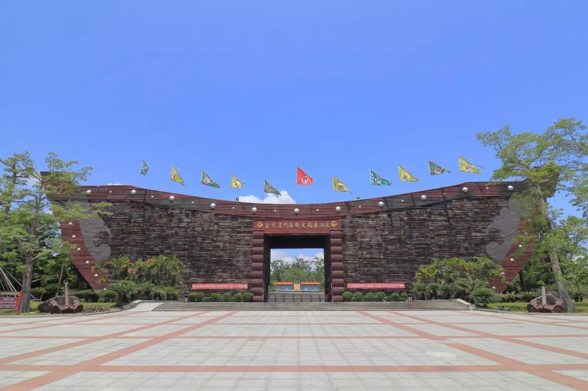
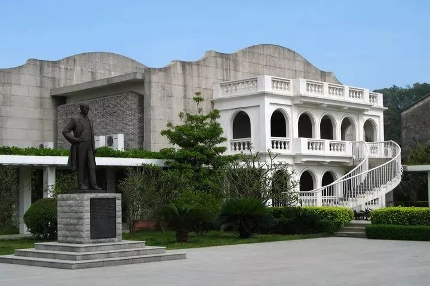

新会景区
游新会的万水千山，品新会的风土人情
圭峰山国家森林公园
AAAA级景区 全年开放圭山，是石林县最高峰，山高地阔，气象万千。清晨，登圭山，观喷薄欲出的红日、朝霞；傍晚，临圭山，看落日，余辉。在天气晴朗的日子里，在圭山顶，放眼眺望，沪西、弥勒、师宗、路南锦绣般的原野平畴，山河湖泊，轻沙浩渺，令人心旷神怡最使人难忘的是冬雪踏圭山，一片银装素裹，冰雕玉琢的世界。极目所至，仿佛是“北国风光，千里冰封，万里雪飘，山舞银蛇，原驰腊象”，使人联想翩翩。
圭山云海也是值得一看的。既可以从山顶上往下观看，也可以在山下往上观看。云海，其实是轻烟似的白雾，时而升腾，时而飞动，时而伫立。升腾时，群峰显露臂膀，山花张开笑脸；飞动时，层峦影影绰绰，森林时隐时现；伫立时，一片汪洋，天和地融合在一起，那么神秘，莫测，使人深深感到大自然的奇妙。
元崖门海战文化旅游区
位于古井镇官冲村崖门古战场 宋元崖门海战文化旅游区位于广东省江门市新会区古井镇官冲村崖门古战场，距新会城镇约50公里。该旅游区规划总面积共1100亩，共分四大功能区：即文化主题纪念区、文化休闲体验区、生态园林保育区和远景规划发展区。已投入使用的是首期工程，占地250亩，投入了2000多万元资金进行改造建设。
宋元崖门海战文化旅游区有6大特色：中国首个以海战文化为主题的旅游区；中国最大型的仿宋战船标志建筑；全世界最巨型的船用铁锚；中国最大的汉白玉龙顶传国玉玺；广东省唯一的皇帝行宫故址和广东省最长的书法诗碑廊。
小鸟天堂
中国最大的天然赏鸟乐园之一
1933年，一个年轻作家来这里游览，开始是失望，后来是惊喜，当许许多多白鹭、灰鹭、画眉在这片榕树林上空欢腾时，他写下了一篇脍炙人口的散文《鸟的天堂》。再后来，当年这个年轻作家巴金最终成了举国闻名的文学大师，他的这篇散文也被选进了小学课本，一代又一代小学生在老师的带领下，诵读了这篇课文。从此，也永远在记忆里保存了这片神奇的绿洲，还有那数不清楚的小鸟。
当年的小村庄渐渐发展成为一个热闹的圩镇，而那些在巴金散文里出现的小鸟或许已不存在了，但水还是这湾碧水，林还是这样的榕林。走进这片榕树林，隔水相望，这个偌大的绿色城堡显示出异常的静谧，小鸟影踪无迹可寻。但惊喜的是，这片茂盛榕树林身后的一片榕树、竹林里发现了许多白鹭、灰鹭、画眉，甚至麻雀。曾经有极少数人偶尔来附近打鸟，景区为此成立了护鸟队巡逻保护这片榕树林，还有那些生动的精灵。
梁启超故居
建于清光绪年间 免费开放 梁启超故居是全国重点文物保护单位，位于新会会城茶坑村，建于清光绪年间，是一幢古色古香的青砖土瓦平房，由故居、怡堂书室、回廊等建筑组成，建筑面积有400多平方米。故居有一正厅、一便厅、一饭厅、二耳房，两厅前各有一天井，便厅侧有梯级直达其顶部楼亭书房，可远眺崖海风光；怡堂书室是梁启超曾祖父所建，是梁启超少年读书、接受儒家传统思想的地方，清光绪十八年夏天，梁启超携同新婚妻子李蕙仙回乡，就居住在书室的偏房，长女梁思顺也出生于此。
为缅怀任公矢志不渝的爱国情怀以及在教育、学术上的卓越贡献，2001年又建成梁启超故居纪念馆，建筑面积达1600平方米，建筑形式中西合璧，既有晚清岭南侨乡建筑韵味，更隐现天津饮冰室风格 ，兴建的纪念馆前还有一个巨大的鱼池。纪念馆以丰富的历史图片展现了任公爱国图强、毕生奋斗的事迹，陈列展出了任公的部分著作，有《饮冰室合集》、《欧游心影集》和《时务报》、《清议报》、《国风报》等珍贵典籍，再现了任公伟大的爱国主义精神、思想体系，使人们对梁启超先生有更正确、更深入的认识。